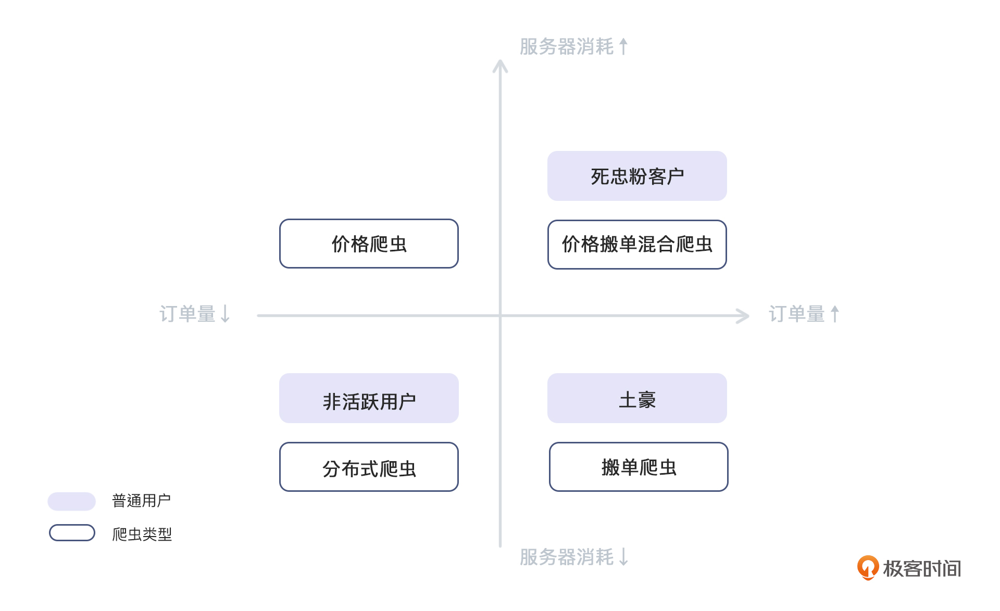

- 00 开篇词 如何突破“爬虫反爬虫”内卷之怪现状？.md.html
- 01 爬虫需求的诞生：我们是正经的软件工程师.md.html
- 02 爬虫的内卷和黑化：我们变得不正经啦.md.html
- 03 反爬虫的发展以及展望：我们也不是什么正经工程师.md.html
- 04 爬虫的首轮攻势：如何低调地拿到自己想要的数据？.md.html
- 05 反爬虫的应对之策：通用且基本的检测规则是什么？.md.html
- 06 爬虫攻势升级：分布式的意义在哪里？.md.html
- 07 反爬虫升级：如何判定你是个真人？.md.html
- 08 博弈的均衡：如何对抗道德的沦丧和人性的扭曲？.md.html
- 09 反爬虫概述（一）：高收益的后端能做哪些基本的事情？.md.html
- 10 反爬虫概述（二）：无收益的前端是怎么进行key处理的呢？.md.html
- 11 反爬虫概述（三）：前端反爬虫是怎么做信息收集的？.md.html
- 12 反爬虫概述（四）：前后端都不合适的时候如何进行处理？.md.html
- 13 反爬虫基础理论：这是唯一一节严肃的纯理论课.md.html
- 14 低耦合：如何快速下线反爬虫系统？.md.html
- 15 规则引擎：如何快速响应突发的爬虫需求？.md.html
- 16 验证爬虫：我到底要不要百分百投入？.md.html
- 17 招聘篇：如何写一个合适的JD？.md.html
- 18 如何搞定老板（上）：如何编造虚无缥缈的OKR？.md.html
- 19 如何搞定老板（中）：如何组建团队.md.html
- 20 如何搞定老板（下）：团队考核怎么做？.md.html
- 加餐 反爬虫的专家级鉴别力：用户习惯检测.md.html
- 春节加餐01 破解还是不破解，这是一个问题.md.html
- 春节加餐02 真实世界里，小心屠龙勇士变恶龙.md.html
- 春节加餐03 低调驶得万年船.md.html
- 答疑课堂 爬虫反爬虫调试对抗技巧以及虚拟机详解.md.html
- 结束语 达到理想不太易.md.html
- 捐赠
加餐 反爬虫的专家级鉴别力：用户习惯检测
你好，我是DS Hunter。又见面了。
上一讲，我们讨论了反爬虫方检测真人的几种方式，分别是各种游戏验证码、变态验证码以及滑块验证码。当然，除了这三种检验方式，还有一个更简单的验证码，让用户单纯地看图猜字。这些非黑即白的方法，可能会给你一种感觉，让你觉得：这是一个不可解的问题，没有哪个方法是完美的啊！
记不记得上一讲除了真人检测的几种方式，我还说过什么？“完美解不存在，生活中很多方案都是依靠近似解来进行的”。同样，我也给你提到了，我们在成为反爬虫专家的这条路上，需要的不仅仅是一些通用的、非黑即白的鉴别方法，更要有敏感的鉴别力。
那么现在，我就带你回到寻找近似解的问题中，给你补充一个动态拦截方式：用户习惯检测。
检测真人的目的是什么？
这里，我们首先回归一下初心，明确接下来所有动作的目的。你可以想一想，我们为什么要检测真人？是出于对机器人的厌恶？还是有什么洁癖吗？
不是的。进行检测，单纯的只是因为机器人不仅不会带给我们经济利益，反而会消耗我们的资源。
明确目的之后，“真人检测”这个问题近似解的方向就变得简单了：其实，我们并非一定要检测出谁是真人。我们的目标，是检测那些ROI不高的账号，我们并不在乎他是不是真人。
检测方法：用户画像分析
为了检测出ROI不高的账号，我们可以针对订单量的高低以及服务器的消耗情况这两方面，综合判断出每种组合情况下的用户类型以及可能出现的爬虫类型。通过这样的分析，我们就可以给所有账号进行分层了：

从图表中可以看到，爬虫是可以隐藏在各个地方的。而我们之所以想拦截爬虫，单纯的只是希望提升ROI。
基于这样的想法，我们可以分析一下四个区域的爬虫和它们的应对方式了。
分布式爬虫，咱们之前已经讨论过了，作为爬虫界的主力和炮灰，我们整个系列都在探讨如何拦截或者误导它们。而这篇加餐则主要特指那些看起来漫无目的、迷惑反爬虫方的炮灰爬虫。
除了分布式爬虫，这里还出现了两个新的定义：价格爬虫和搬单爬虫。当然，他们都属于咱们在06讲中说过的分布式爬虫，只不过这里因为有了明确的目的，就单独进行讨论了。最后，图表中还有一个分类是由价格爬虫和搬单爬虫两者混合组成的。它们虽然大幅提高了订单量，但也让服务器的消耗变高了。这里，我们明确一下两个新名词的定义：
价格爬虫：以抓取货物价格为主，并且不产生任何支付行为的爬虫。
搬单爬虫：通过自动下单，实现订单转移功能，补全爬虫方的货物缺失。
价格爬虫是大家深恶痛绝的，这个没什么说的，订单量低，意味着没钱赚，同时对自己服务器的消耗又高，所以直接拦住即可。至于搬单爬虫，可能你会表示不理解：这个，有什么不好的吗？人家这是来送钱来了啊？
没错，搬单爬虫是送钱的，甚至还会让你的财报变得好看。所以很多公司决策者对这种爬虫也是又爱又恨。爱就不用说了，谁不爱钱呢。而恨，主要在于，长期来看，用户在对方站点下单，爬虫在自己这面下单，时间长了，自己就沦落为“供应商”了。而做互联网，最重要的是用户，不是短期收益。因此，大部分公司最终会对搬单爬虫进行拦截。
检测详解：搬单爬虫的判断方式
针对搬单爬虫，非技术手段主要是财务手段，卡对方流水时间。这里的具体方案可以咨询公司财务，他们会有大量的苦水给你吐的，你自然能在里面找到大量的搬单爬虫的痛点。一定要记住，反爬的核心就是：抓住爬虫的痛点，不断强化，把它痛死。
技术角度方面，浏览器端主要就是针对人的行为进行检测。这方面，大家的手段还是偏猜测更多一些，并没有什么通用的办法，一般就是在线上分析用户习惯，然后头脑风暴，看哪些习惯是人类特有的，这些习惯就可以做为评分标准。当分值低到一定程度的时候，就可以认为这个人可疑。再之后，就可以进行一些拦截操作了。
这里主要举几个例子来说明这个判断方式。
第一个，姓名的复制粘贴。大部分的搬单爬虫，内容是直接set的，不会引发输入法的输入，机械得过于明显了。也就是说，爬虫方的模拟失误，把自己给暴露出来了。
而人工操作的话，会有两种情况。一种是真的普通人，这种人用输入法输入名字，选字的时候由于输入法已经有了记忆，所以第一个选项就是自己的名字。这种用户我们就只能进行无罪推定，认为是真人了——总不能不让输入法记忆用户的名字吧？还一种情况就是人肉搬单了。是的，即使他们是人类，我们也照拦不误。人肉搬单， 一般把名字都是复制粘贴进来。因此，这样的过程是一个很强的减分项。
第二个，手机号归属地与IP地址不匹配。虽然我们不能拿到手机号的常用地点——不考虑现在的行程码这种技术，这不是普通人能用的——但是我们依然可以在一定程度上用这个分数做参考。但是，跨手机归属地使用手机，现在已经逐渐是个常规操作了。因此，这一条也可以是你的判断条件之一，只是分数也不用给得太高。
第三个，切屏操作。众所周知，在面试系统里，切屏是一个严重的减分项。为什么呢？因为求职者如果切屏了，那就是在找资料。这是一个严重的作弊行为。
那么，搬单的人也是一样的。如果是人肉搬单，那么他们会在一个内部系统里查看需要填写的信息。这些信息，一般说来都是切屏过去复制，再过来粘贴。就算有经验的人，避免了复制粘贴，也很难避免切屏：大部分搬单的员工都是低薪聘请的，不会给他们配第二块显示器的。不过，一样的道理，万事无绝对，要精细调整每一项对应的分数。
除了上面说的三点之外，其实还有一些特殊的判断方式，你可以根据业务的形态不同，自己去头脑风暴一下。这样想出来的方法，才是最适合自己业务的，也是最好用的。
为什么这么说呢？你可以看到，上面的三种方法，第一种和第三种就和下单流程的适配度很高，但是对于小说、视频等信息类的平台来说，就没有那么合适了，甚至可以说毫无用武之地。所以，网上查到的办法，大多数是别人的总结，一般放在自己业务，都有些水土不服，需要进行改造或者自己发挥。
小结
好了，以上就是这次分享的主要内容了。实际上真人检测是一个不可完成的任务，我们都是在追求一个近似解。而且，思路上，我们主要是检测某些流量是否与别人不一致，这里包括作弊的真人，也要被拦截。所以最终我们一定会算个总分，然后根据情况设置个可配置的分数做为阈值，来实现动态的拦截效果。
截止到目前，爬虫与反爬虫逐个过招的战争就大致告一段落了。从08讲开始，我们会专注反爬虫的技术细节。其中08讲是法务相关，偏向非技术方向。而09讲到12讲，理论性会越来越强，尤其是12，写的时候我自己都犯困，大家要做好准备不要打盹啊！建议你边听音频边浏览，有人在耳边跟你说道说道，效果肯定不一样。
我们08讲见！
© 2019 - 2023 Liangliang Lee. Powered by gin and hexo-theme-book.